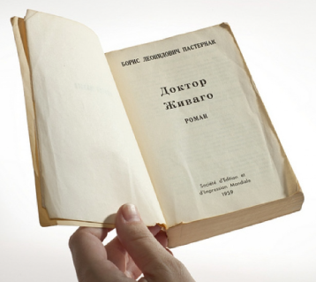

返回主页
Doctor Zhivago

三战：舆论（宣传）、心理、法律。
During the Cold War, the CIA loved literature ― novels, short stories, poems. Joyce, Hemingway, Eliot. Dostoevsky, Tolstoy, Nabokov.
Books were weapons, and if a work of literature was unavailable or banned in the Soviet Union or Eastern Europe, it could be used as propaganda to challenge the Soviet version of reality. Over the course of the Cold War, as many as 10 million copies of books and magazines were secretly distributed by the agency behind the Iron Curtain as part of a political warfare campaign.
做党和人民满意的好老师
King's Speech
“去美国化”
“中国版门罗主义”
有些族裔更平等？
毒害中国家长的四句话
version:1.0; jobnet@188.com © retter2012.com